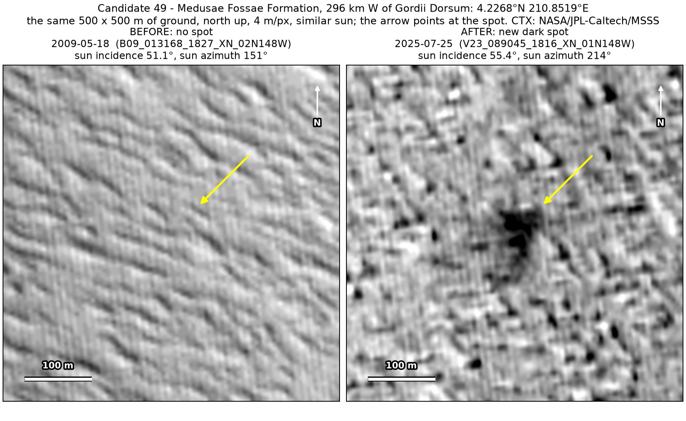
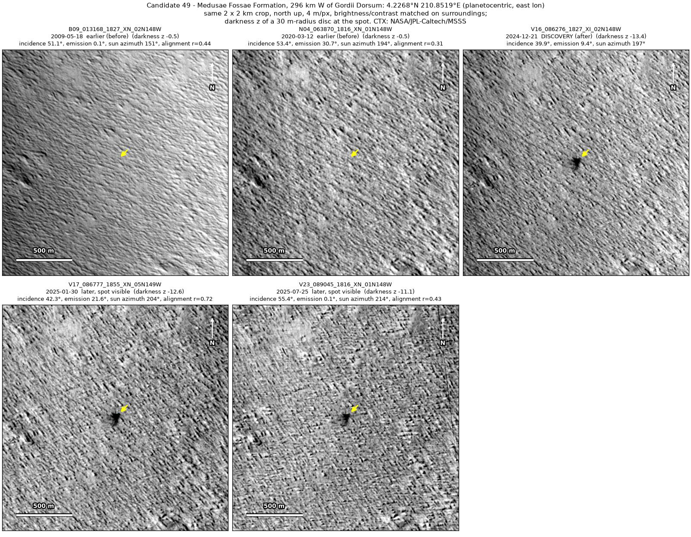
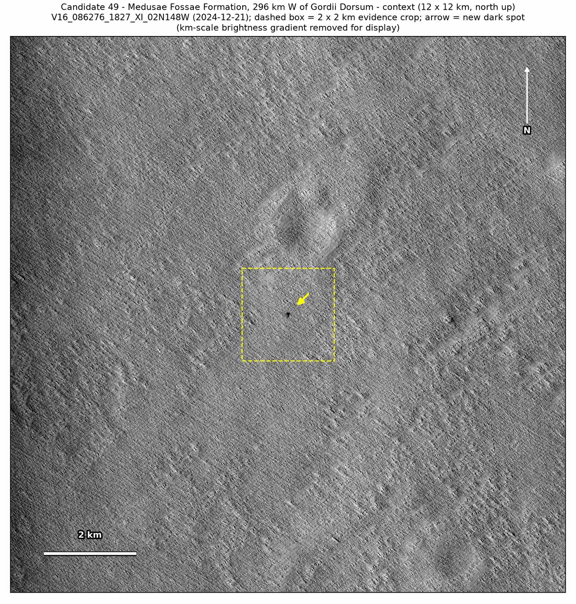
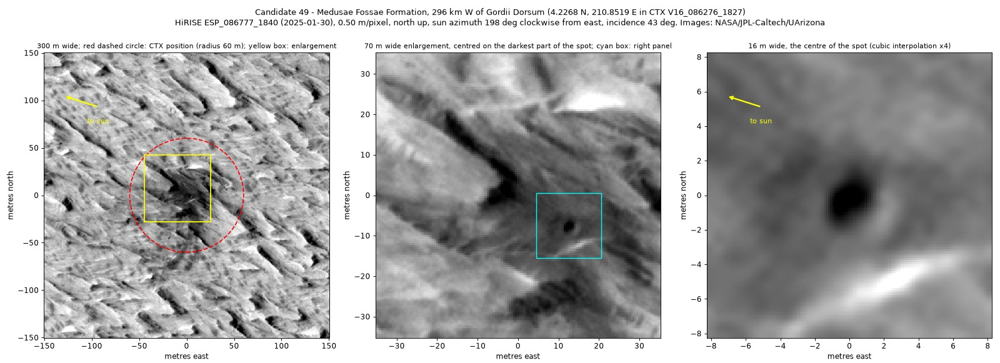
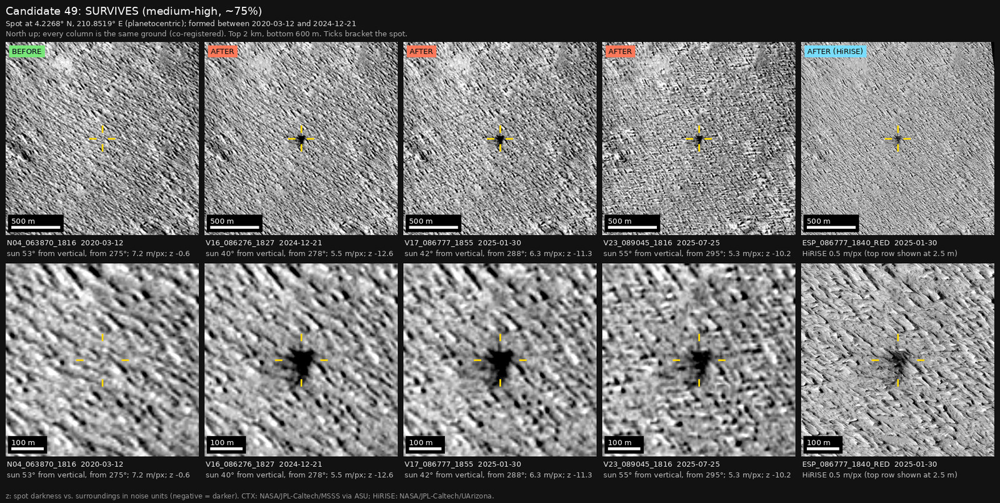
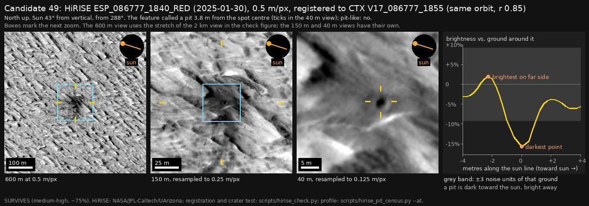

Professor of Mathematics
Paata Ivanisvili
Department of Mathematics, University of California, Irvine

← Possible new impact sites on Mars
Candidate 49: Medusae Fossae Formation, 296 km west of Gordii Dorsum
Strong · roughly 75%

What changed. A dark spot 80 to 100 m across, with ragged edges, appeared on the wind-carved ridges of the Medusae Fossae Formation, 296 km west of Gordii Dorsum, between March 2020 and December 2024. It is in three images from December 2024 to July 2025.
Why it may be a new impact. Images from 2009 and March 2020 show nothing there, and both would have shown it clearly. The March 2020 image had the sun from nearly the same direction as the December 2024 image and about as high as the July 2025 one, so the spot is not a shadow, and it is seen on three orbits. By chance, NASA’s HiRISE camera photographed it in January 2025, on the same orbit as a CTX image; it shows the dark zone, about 11% darker than the ground around it, where the CTX images put it.
- Location
- 4.227° N, 210.852° E (149.148° W)
- Absent
- 18 May 2009 and 12 March 2020
- Present
- 21 December 2024, 30 January 2025 (CTX and HiRISE) and 25 July 2025
- Size
- Dark spot 80 to 100 m across, with ragged edges
- Confidence
- Strong candidate; roughly 75% that it is a new impact.
- Caveat
- The ground is soft, wind-carved rock, and wind often changes its brightness; that remains the main alternative and is why the confidence is lower. The small dark dot, about 2 m across, near the centre of the HiRISE view is no evidence of a crater: dots like it are just as common on the ground around the zone, and with no earlier HiRISE image it cannot be shown to be new. The HiRISE image was aimed at the surrounding terrain, not at the spot, but the HiRISE team may have noticed it. Like every candidate here, it is unconfirmed: see the caveat.




